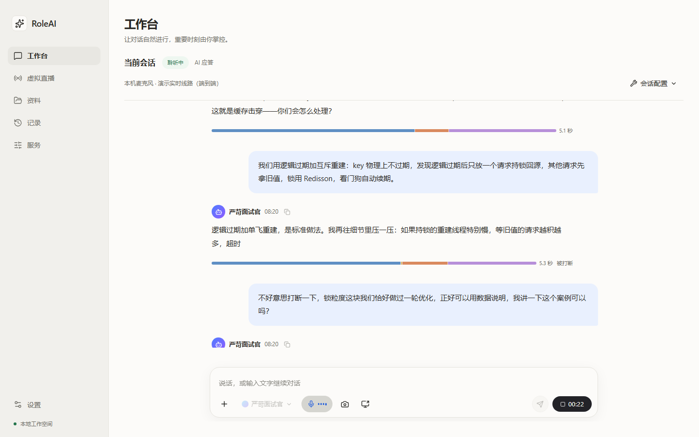

RoleAI
Let AI join the conversation in the role you define.
A Windows desktop AI role-play assistant: set the persona, opening line and speaking style, pick your model and voice providers, and hold voice conversations grounded in imported materials. Built for interviewer role-play practice, meeting assistance and live-stream narration, with session records and a teleprompter studio included.

This is an internal trial build for Windows x64. Before use, disclose that an AI is participating and how it is recorded, and keep a human in the review loop; do not use it for covert impersonation or unreviewed automated decisions. Everything in the online demo is fictional and connected to no AI service.
Three core capabilities
A complete loop around real-time conversation — from talking to reviewing.
-
Real-time voice
Speech appears as live subtitles and the AI reply streams in; barge in at any moment, with pause, takeover and correction controls.
-
Roles and materials
Strict interviewer, speaking coach, meeting assistant and live-stream presenter roles ship out of the box; answers can cite imported materials.
-
Local-first
Role configs, materials and session records stay on your machine; keys live in Windows Credential Manager; records export to Markdown.
A quick tour
All screenshots are generated automatically by Playwright and stay in sync with the UI.